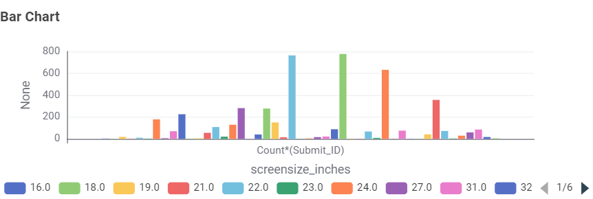
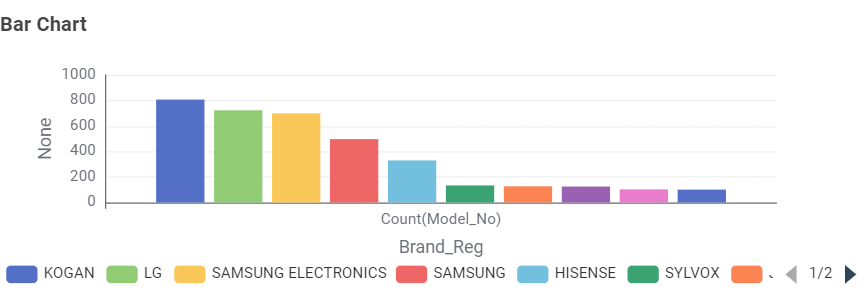
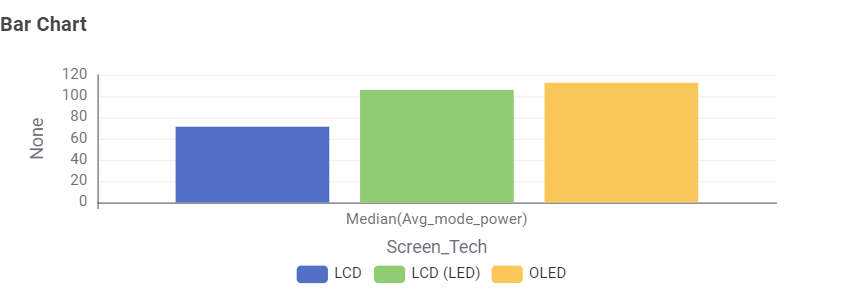
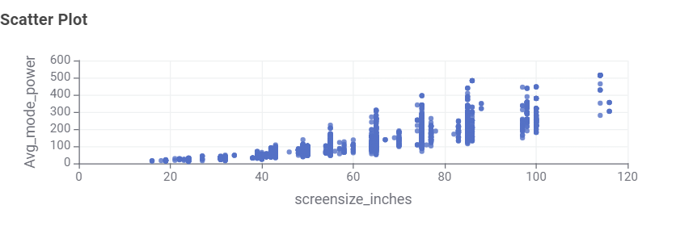
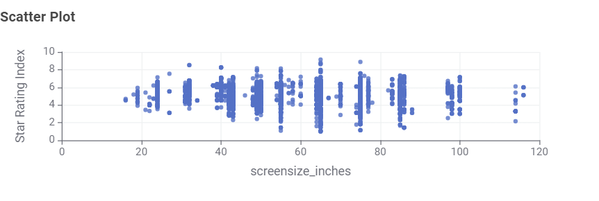

TV Energy Insights: Data Story
This data story explores television models currently
available in Australia. The cleaned dataset contains
4,759 available television models. The visualisations
examine screen technology, screen size, brands, power
consumption and star ratings.
1. What type of TV screen technologies are currently
available in Australia and which are the most frequent?
LCD (LED) was the most frequently available screen
technology in the dataset, with 3,794 models.
LCD had 496 models, while OLED had 292 models.
2. What screen sizes are currently available,
and which are the most frequent?

The most frequent TV screen size was 65 inches,
with 777 television models.
3. Which brands have the greatest number of
different models?

KOGAN had the greatest number of different TV models,
with 807 models, followed by LG with 723 models.
4. Which type of screen technology consumes
the least amount of power?

LCD televisions had the lowest median power consumption
at 71.3472 W. LCD (LED) had a median power consumption
of 106 W, while OLED had a median power consumption
of 112.7 W.
5. What is the relationship between screen size
and power use?

The scatter plot shows a general positive relationship
between screen size and power consumption. Larger
televisions generally tend to use more power, although
there is variation between individual models.
6. What is the relationship between star rating
and screen size?

The points are spread across different screen sizes,
showing no clear consistent relationship between
screen size and star rating in this dataset.
Conclusion
The data shows that television characteristics and energy
consumption can vary across different models. LCD (LED)
was the most frequently available screen technology,
while 65 inches was the most common screen size. KOGAN
had the greatest number of different models in the dataset.
LCD had the lowest median power consumption among the
screen technologies. The data also showed a general
positive relationship between screen size and power
consumption, while there was no clear relationship between
star rating and screen size.